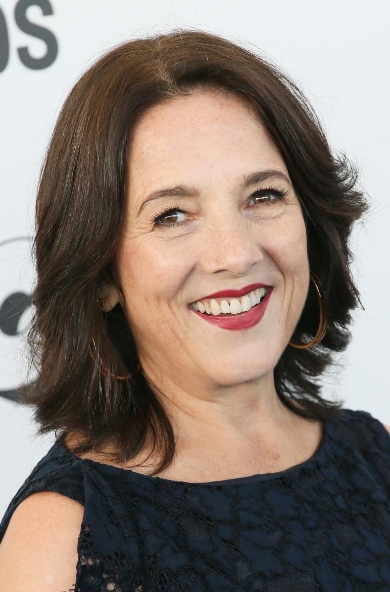
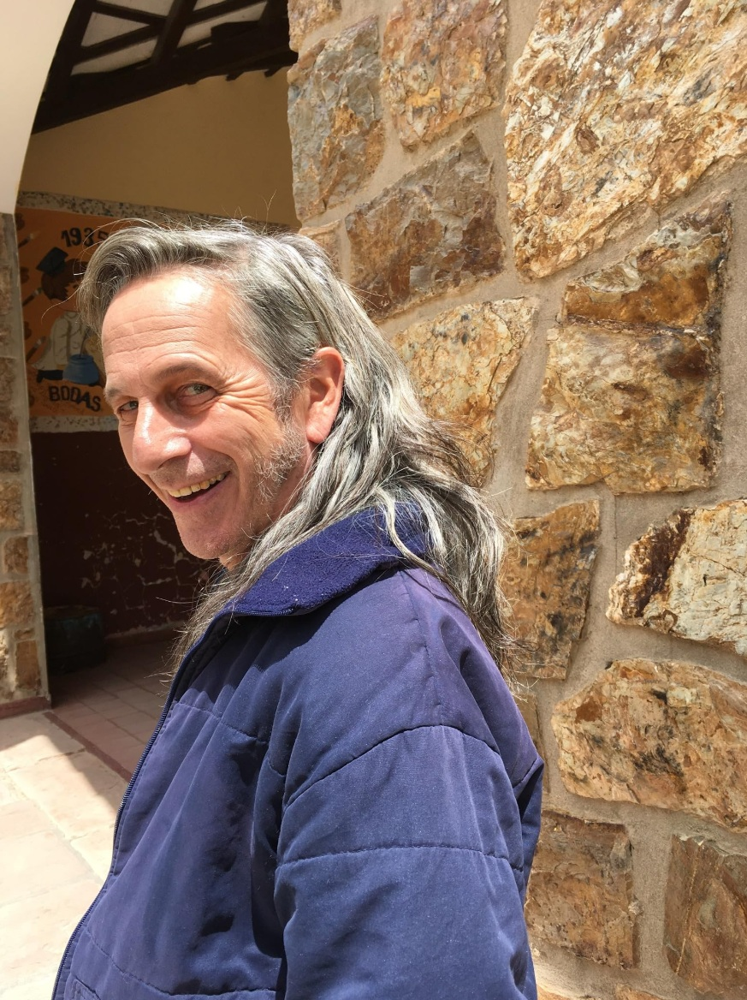
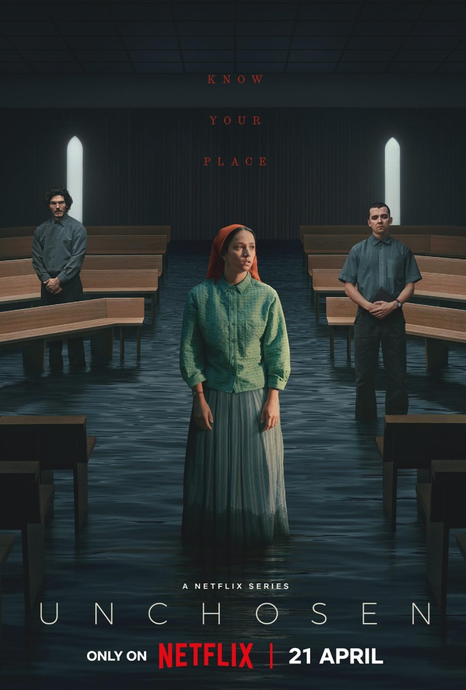
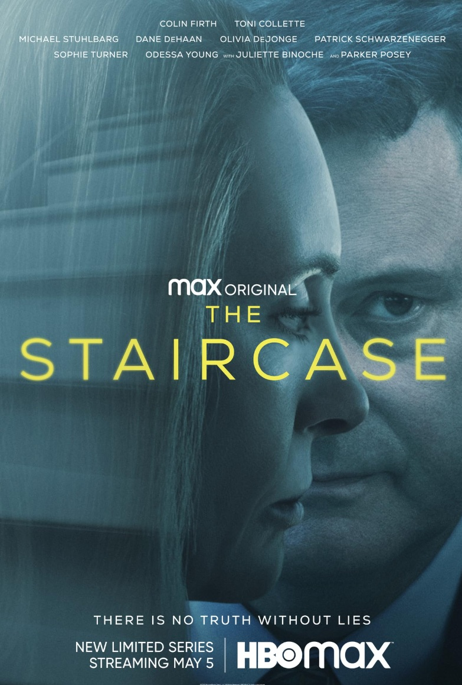
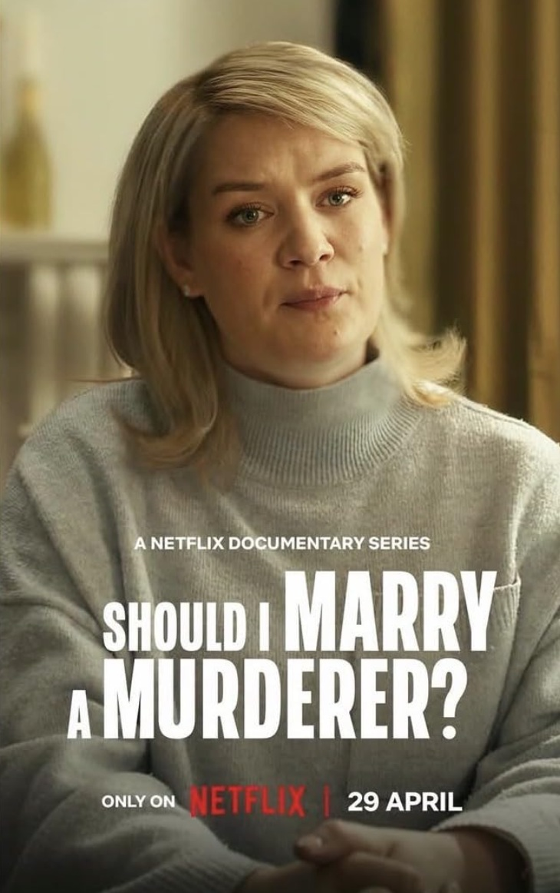
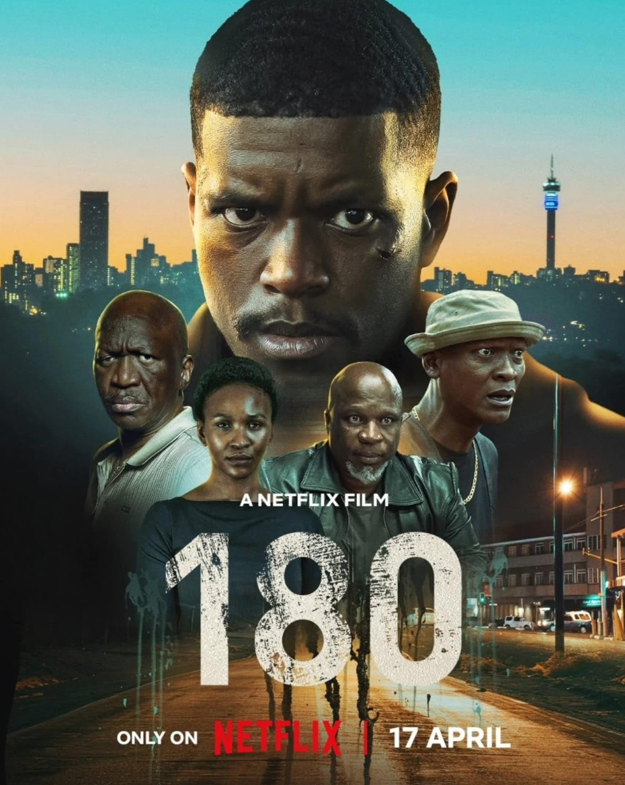

ALGUIEN TIENE QUE SABER
La desaparición de un joven enfrenta a un veterano policía con el caso más complejo
de su carrera. Él sigue cada pista hasta llegar a la verdad: Un sacerdote sabe lo qué
ocurrió, pero su silencio está protegido por el secreto de confesión.
- Género: Acción
- Año: 2026
- Duración: 1 TEMPORADA
- Director: Fernando Guzzoni, Pepa San Martín
- Productores/as: Carolina Agunin, Alvaro Cabello
- Calificación general: 6.8/10
- Clasificación por edad: +18
- Plataformas: Netflix
Tráiler
REPARTO

PAULINA GARCÍA

ALFREDO CASTRO
LUCAS SÁEZ COLLINS
CAMILA HIRANE
BENJAMIN GEJMAN
RESEÑAS DESTACADAS
Calificación: 7.0 / 10
Micscotty dice:
¿Malas reseñas??
“No entiendo por qué hay 6 reseñas tan malas. Alguien tiene que saber es una
serie sólida. Quizá no a todo el mundo le guste una serie larga que acaba con
preguntas sin respuesta, pero desde luego no es confusa. Sí, es extraño que
pasara tanto tiempo investigando, pero déjalo seguir. Diálogos interesantes,
paisajes geniales.”
Calificación: 8.0 / 10
danielle_nathanson dice:
Ignora todas las críticas negativas; ¡Está buena!
"Esto no merece las críticas negativas. Como adicto al true crime que disfruta
indagar en desapariciones misteriosas y crímenes sin justicia, esto es muy
realista. La madre y el hermano hacen un excelente trabajo mostrando el duelo y
nunca perdiendo la esperanza ni buscando a la víctima. Realmente muestra los
mejores esfuerzos de la policía cuando no hay respuestas ni pruebas; A veces
las respuestas simplemente no están disponibles de inmediato y las
investigaciones tardan mucho cuando no hay testigos, escena del crimen,
cuerpo ni pruebas. La actuación fue genial y muy original, nada aburrida. No le
faltó suspense ni misterio, así que no sé de qué se quejan otros espectadores."
Calificación: 4.0 / 10
amandaworks-46133 dice:
Nunca he estado tan confundido
"Realmente quería que me gustara porque el concepto era bueno, pero la serie
en sí es un desastre. Cada episodio tiene varios momentos en los que los
personajes no tienen ningún sentido. ¿Alguien verá algo loco, pedirá ayuda, le
dirán "no" y luego simplemente se encogerá de hombros y seguirá adelante. Es
extraño. Ocurren cosas aleatorias, como la escena de conducción, sin
recompensa ni explicación. Sinceramente, es una locura y una lástima porque la
base de "historia real" tenía tanto potencial. No tengo ni idea de por qué lo vi
todo."
Calificación: 4.0 / 10
GJD-y-that-that dice:
Actuación horrible y muy aburrida
"La actuación es terrible, las expresiones faciales son de pantomima, como en un
drama coreano de bajo presupuesto. No pasa nada realmente interesante
durante todo el tiempo y los actores parecen desconectados y realmente no
parecen hacer mucho esfuerzo. Lo único que tiene a su favor es que las
localizaciones de las escenas están bien elegidas y me gustan los colores y los
vestuarios. Realmente me cuesta encontrar algo más positivo que decir."
Calificación: 1.0 / 10
bojan-61732 dice:
¡PÉRDIDA DE TIEMPO!
"Si pudiera poner -10 estrellas, lo haría.
No sabían cómo terminar la serie, así que la terminaron sin ningún sentido. Si
quieres ver algo y, al final de la serie, no entiendes de qué trataba, entonces
adelante y pierde el tiempo con 8 episodios de un desastre total. La historia no
lleva a ninguna parte, los personajes parecen inútiles y el final es
completamente decepcionante y confuso."
RELACIONADOS

LOS NO ELEGIDOS
Calificación: 6.1/10
DURACION: 1 TEMPORADA

LA ESCALERA
Calificación: 7.1/10
DURACION: 1 TEMPORADA

SHOULD I MARRY A MURDERER
Calificación: 6.5/10
DURACION: 1 TEMPORADA
SANAR COCINAR, AMAR
Calificación: 6.5/10
DURACION: 1 TEMPORADA
